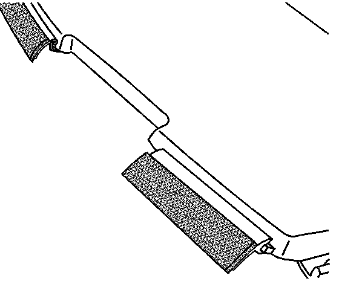
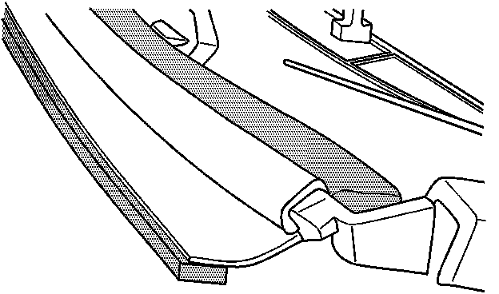
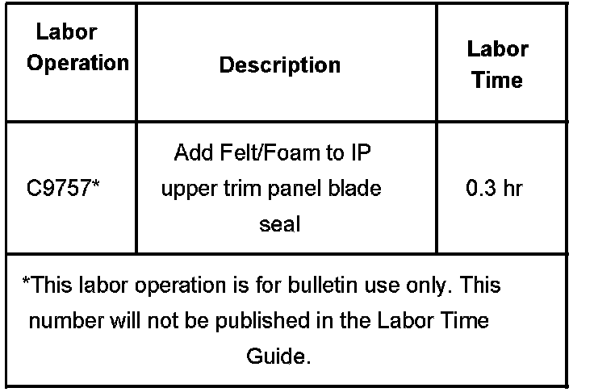

Interior - Rattle/Buzz From Dash/Base of Windshield
Bulletin No.: 06-08-49-015Date: June 19, 2006
TECHNICAL
Subject:
Buzz or Rattle Noise from Front of Instrument Panel or Base of Windshield (Apply Felt or Foam On Blade Seal)
Models:
2007 Cadillac Escalade, Escalade ESV, Escalade EXT
2007 Chevrolet Avalanche, Suburban, Tahoe
2007 GMC Yukon, Yukon XL, Yukon Denali, Yukon Denali XL
Condition
Some customers may comment on a buzz or rattle noise coming from the front portion of the instrument panel or the base of the windshield when driving over any mildly or moderately rough road. The noise may be described as coming from the steering column, instrument cluster, radio/HVAC controls, or other location on the IP.
Cause
The rubber blade seal at the front of the instrument panel (where it meets the windshield) may not press firmly against the windshield glass and may create a buzz or rattle noise when the vehicle is driven over rough surfaces.
Correction
1. Verify the customer concern. If the noise can be stopped by pressing lightly downward on the top of the instrument panel near the windshield, then proceed to the next step.
2. Remove only the forward portion of the IP upper trim panel. This is the part of the IP closest to the windshield. Refer to Instrument Panel Upper Trim Panel with Windshield Defroster Nozzle Grille Replacement (Cadillac) or Instrument Panel Upper Trim Panel with Windshield Defroster Nozzle Grille Replacement (Except Cadillac) in SI.
^ If the IP upper trim panel is loose prior to removal, install new design retaining clips per Corporate Bulletin Number 06-08-49-007.
^ If the IP upper trim panel is NOT loose prior to removal or once the new clips have been installed, proceed to Step 3.

3. Place a strip of black felt (preferred less reflective if exposed to sunlight) or black foam approximately 2 mm thick and 8 mm wide along the entire length of the existing seal at its forward edge (This can either be one continuous strip or several smaller pieces placed side by side). Be sure to also place felt on the small seal to the left of the VIN plate. Refer to the illustration (felt strip should be on upper surface, along forward edge of blade seal).

4. If any rattle on the front part of the IP upper trim panel itself is present, also place a strip of felt or foam along the front edge on the underside of the IP upper trim panel. Refer to the illustration (underside of IP upper trim panel is shown).
5. Reinstall all of the trim pieces. Refer to Instrument Panel Upper Trim Panel with Windshield Defroster Nozzle Grille Replacement (Cadillac) or Instrument Panel Upper Trim Panel with Windshield Defroster Nozzle Grille Replacement (Except Cadillac) in SI.
6. Confirm that the customer concern has been eliminated. If not, add one additional thickness of felt/foam to the blade seal.
Warranty Information

For vehicles repaired under warranty, use the table.

Disclaimer